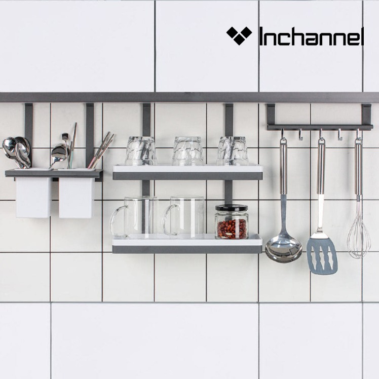

덩치 큰 2인 소파 대신 아담한 1인 라운지 의자 2개(각 60×64×75cm)와 미니 원형 커피 테이블(지름35×높이52cm)을 동쪽 벽에 대각선 카페형으로 배치해, 두 명이 나란히 커피를 마시면서도 거실 중앙을 시원하게 비웠어요. 왼쪽 무지 SUS L과 오른쪽 코헨 유닛2 NO.2는 원래 자리를 유지하고, 거실 바닥에는 화이트오크·스테인리스·베이지 의자 톤을 따뜻하게 묶어주는 노미아(NOMIA) [new] t4 - 오트밀 러그(150×200cm)를 깔았습니다.
왼쪽 무지 SUS L + 오른쪽 코헨 유닛2 NO.2 + 거실 중앙 노미아 [new] t4 - 오트밀 러그(150×200cm) 배치. 판매 제품의 외형을 단순화했으며 실제 설치·하중·안전고정 검증을 뜻하지 않습니다.
2026.11.3 · 노미아(NOMIA) 거실 러그 선정 및 150×200cm 후보 3종 비교
기존 단색 베이지 러그(이씨라메종 올리 워셔블 러그 150×200cm · 155,400원) 대신, 우리집 F안의 화이트오크 원목(코헨 유닛2·무지 SUS·리사보 식탁) + 스테인리스/크롬 + 웜베이지 라운지 의자 2개 + 블랙 오디오 포인트와 가장 조화롭게 어우러지는 노미아(NOMIA) 150×200cm(M 사이즈) 러그 3종을 비교해 1순위 [new] t4 - 오트밀 러그를 3D와 견적에 반영했습니다. 가격도 85,900원(무료배송)으로 기존 러그보다 69,500원 절감됩니다.
F안 3D 적용 · 1순위 추천
노미아 [new] t4 - 오트밀 러그 · M (150×200cm)
왜 우리집에 가장 잘 어울리나요? 바깥쪽 웜 토프베이지 테두리와 안쪽 크림 프레임, 짙은 에스프레소 브라운 스티치 점선 테두리, 중앙의 은은한 4×6 톤온톤 오트밀 체크가 어우러져 단색 러그처럼 밋밋하지 않으면서도 시선을 어지럽히지 않고 서쪽 수납장(무지+코헨)과 동쪽 라운지 의자 2개 사이 바닥 중심을 정돈해 줍니다.
소재·촉감 (t4 등급) 약 1cm 내외의 부드럽고 촘촘한 단모 파일(Polyester)로 맨발·실내화 모두 쿠션감이 포근하고, 장모 대비 먼지·털 빠짐 관리가 쉬우며 바닥 논슬립 미끄럼 방지와 워셔블 물세탁을 지원합니다.
85,900원
100×150 기본 42,900원 + M(150×200cm) 옵션 +43,000원 · 무료배송 (3~7일)
1인 라운지 의자 2개 + 미니 원형 커피 테이블 폭60×깊이64×높이75cm 1인 의자 2개를 동쪽 벽 북쪽(746,641 · 회전 -65도)과 남쪽(743,750 · 회전 -84도)에 카페형 각도로 놓고, 두 의자 사이 벽 쪽 삼각형 포켓(761,697)에 지름35×높이52cm 원형 테이블을 배치했습니다. 두 의자 사이 간격은 약39.3cm로 여유롭고, 남쪽 의자와 청소기(19.8cm)·책상(13.1cm)도 겹침 없이 떨어집니다. 의자 2개·사이드테이블은 제품 미정 모형이라 견적에 넣지 않았습니다.
주연테크 V28UE + 모니터암 책상에는 보유/별도 구성인 주연테크 V28UE(28인치 4K UHD, 스탠드 제외 패널 63.9×36.9×4.3cm, VESA 100×100mm)를 모니터암에 달았습니다. 평소에는 책상 정면으로 쓰고, 두 라운지 의자에서 커피를 마시며 쉴 때는 두 의자 사이 시선 정면(거리 약1.6~2.1m)으로 부드럽게 돌려 TV·영상을 함께 볼 수 있습니다.
서쪽 벽·거실 원위치 그대로 2인 소파(깊이85cm)보다 깊이가 21cm 얕은 1인 의자 2개를 대각선으로 배치해 코헨 유닛2(중심 y=600), 무지 SUS L(중심 y=685), 장스탠드·트리·책상·청소기를 한 칸도 옮기지 않았습니다. 모든 주요 통로가 95cm 이상으로 유지되고 식탁 남쪽 열린 바닥도 5.25㎡ 그대로 남습니다.
월패드·콘센트 여유 의자 높이가 75cm로 낮아 월패드·조작판(y 634~662.5, 높이 104~150.5cm)을 가리지 않고, 두 의자 사이(y 697 부근)가 열려 있어 동쪽 벽 하부 콘센트(y 712.5~724.5) 접근도 편리합니다.
노미아 오트밀 러그 (150×200cm) F안 3D에서는 노미아 [new] t4 - 오트밀 러그가 기본으로 표시되며, 오른쪽 아래 러그 빼기 버튼으로 언제든 켜고 끌 수 있습니다.
2026.11.6 · 방석 대체 ‘낮은 의자 + 쿠션’ 후보 8종 비교 (초저상 원목 좌식의자 vs 로우 쿠션 체어)
바닥에 납작하게 깔리는 매트형 좌식소파 대신, 낮은 의자 프레임(원목 낮은 다리·코타츠 체어·저상 프레임·낮은 스툴) 위에 폭신한 좌판·등받이 쿠션이 올라간 형태의 후보 8종입니다. 거실 러그 위 좌탁(이케아 목스보다 높이 30cm / E안 원목 좌탁 높이 32cm)과 함께 쓸지에 따라 ① 좌면 높이 8~20cm 초저상 의자형(1~4번)과 ② 좌면 높이 27~48cm 낮은 다리·스툴형 로우 체어(5~8번)로 나누어 고르실 수 있습니다. (현재 견적 합계는 한샘 휴 모드 56,900원 기준을 그대로 유지합니다.)
좌탁 호환 1순위 · 북미산 오크 낮은 다리 + 지퍼 분리 세탁 쿠션 (좌고 20cm)
미드센추리 · 패브릭 원목 좌식 등받이 낮은의자 체어 (우드/오크 · 월넛)
폭54.4 × 깊이58 × 높이48cm (좌면 높이 18~20cm · 등받이 폭52×높이25cm) · 바닥에 그냥 놓는 방석이 아니라 FAS등급 북미산 오크(참나무) 원목 낮은 다리 프레임 위에 고밀도 스펀지 아이보리 패브릭 좌판 쿠션 + 둥근 등받이 쿠션을 결합한 정통 낮은 원목 쿠션 의자입니다. 좌면 높이가 20cm라 양반다리·무릎 굽힘이 훨씬 편하면서 높이 30~32cm 좌탁과도 높이가 잘 맞고, 지퍼식 커버 분리 세탁이 가능합니다.
폭46.5 × 깊이49 × 높이44.5cm (등받이 접었을 때 높이 22cm · 좌면 높이 8cm · 4.4kg) · 바닥 펠트 글라이드(받침발)가 달린 화이트 저상 의자 프레임 + 라텍스급 두툼한 스펀지 좌판 쿠션(분리·교체 가능) + S-Curve 틸팅 등판 구조입니다. 안 쓸 때 등받이를 앞으로 접으면 높이가 22cm로 낮아져 높이 30~32cm 좌탁(목스보다·미룸 좌탁) 아래로 쏙 밀어 넣어 보관할 수 있습니다.
109,000원 (무료배송 · 시디즈 1년 보증)
무료배송 · 평점 4.5 (리뷰 377개) · 높이 28cm 이상 좌탁 하부 수납 공식 지원
폭46 × 깊이46 × 높이45cm · 100% 애쉬(물푸레나무) 원목 낮은 의자 프레임(살대 등받이) 위에 생활방수 특수패브릭 두툼한 방석 쿠션이 일체형으로 올라간 코타츠·좌탁 전용 낮은 의자입니다. 일반 방석처럼 밀리거나 흐트러지지 않고, 무지 SUS 떡갈나무 선반·코헨·아레초 원목 가구와 나뭇결이 자연스럽게 어우러집니다.
가성비 로우 라운지 · 낮은 스틸 다리 + 15~17cm 대방석급 코듀로이 쿠션 (좌고 38cm)
16피스 · CPY 코드 라운지 코듀로이 1인용 소파 체어 안락의자 (아이보리 외 3색)
폭63 × 깊이75 × 높이78cm (좌면 높이 38cm · 좌판 62×52cm · 쿠션 두께 15~17cm) · 기존 바닥 대방석(63,800원)과 거의 같은 가격에 화이트/블랙 캔틸레버형 낮은 스틸 의자 프레임 위에 두께 15~17cm의 초도톰 코듀로이 대방석·등쿠션을 얹은 로우 라운지 체어입니다. 지퍼식 분리 커버로 물세탁 가능하며 바닥 보호 캡이 내장되어 있습니다.
65,900원 (상품 45,900 + 배송 20,000원)
평점 4.6 (리뷰 83개) · 커버 분리 세탁 가능 · 아이보리/그린/그레이/브릭 (좌탁 30cm보다는 단독 라운지·사이드테이블용 좌고 38cm)
지름35 × 높이27cm (원형 좌판 + C자형 낮은 등받이 쿠션) · 내부 원목 프레임과 하단 내마모성 발받침 위에 고탄성 스펀지 + 포근한 양털 부클레 패브릭 원형 쿠션 좌판(높이 27cm)과 C자형 허리 등받이를 올린 미니 낮은 의자입니다. 지름 35cm로 부피가 작아 러그 위에 2개를 나란히 두기 좋고, 2개 구매 시 60,000원(무료배송)으로 기존 대방석 2개(63,800원)보다 저렴합니다.
폭45 × 깊이41.5 × 높이66cm (좌면 높이 39cm) · 일반 식탁의자(높이 80cm·좌고 45cm)보다 전체 높이를 14cm, 좌면 높이를 6cm 낮춘 저상형 원목 쿠션 체어입니다. 단정한 사각 원목 다리 프레임에 도톰한 패브릭(보아스) 또는 PU가죽(레가) 좌판 쿠션과 라운드 등받이를 결합해, 거실 시야를 가리지 않는 낮은 원목 의자를 원할 때 잘 맞습니다.
89,000원 (상품 79,000 + 수도권 배송 10,000원)
2개 주문 시에도 묶음배송비 10,000원(2개 합계 168,000원) · 평점 4.8 (리뷰 36개)
폭61 × 깊이57.5 × 높이73cm (좌면 높이 48cm · 등받이 폭 46cm) · 낮은 5발 회전 다리 위에 두툼한 코듀로이 방석 쿠션 2장을 포개 놓은 듯한 귀여운 1인 쿠션 의자(360도 회전)입니다. 바닥 방석의 포근한 볼륨감을 그대로 살리면서 의자 다리로 띄워 앉는 디자인이라 거실 러그 옆이나 F안 동쪽 벽 1인 라운지 의자 겸용으로도 인기가 높습니다.
2026.11.3 · 거실 좌식소파 확정 (한샘 휴 모드 · 방석 대체) 및 후보 7종 비교
기존 바닥 대방석(데코뷰 베이지 린넨 빵빵이 대방석 63,800원)을 빼고 한샘 휴 모드 좌식 쇼파 각도조절 1인용 의자(아이보리 · 53×70×59cm · 56,900원 · 무료배송, -6,900원 절감)로 선정해 3D와 견적에 반영했습니다. 참고하신 상도가구 모니 패브릭 1인용 좌식쇼파(오늘의집 974645 ↗ · 67×53×62cm · 배송포함 45,900원)보다 ① 퀼팅·단추 자국 없이 더 미니멀한 실루엣이면서 ② 실용성(발수 이지클린 원단 / 지퍼 커버 분리 세탁 / 반폴딩 틈새 수납 / 풀플랫·다리 뻗음 확장)이 뛰어난 7가지 후보 비교도 함께 남겼습니다.
선정 완료 · 3D·견적 반영 (기존 방석 대체 · -6,900원)
한샘 휴 모드 좌식 쇼파 각도조절 1인용 의자 (아이보리)
폭53 × 깊이70 × 높이59cm (펼침 시 70×70×53 계열) · 상도가구 모니의 올록볼록한 3×3 격자 퀼팅을 없애고 평평하고 큼직한 2×2 와이드 블록 쿠션으로 마감해 훨씬 미니멀합니다. 생활 발수(물티슈 이지클린) 원단이라 커피를 흘려도 쉽게 닦아낼 수 있고, 목까지 받쳐주는 하이백과 180° 풀플랫 각도조절 기어를 갖췄습니다.
폭51 × 깊이50 × 높이46cm 계열 · 퀼팅 봉제선이 단 하나도 없는 매끈한 원형 좌판 + 라운드 아치형 등받이(허리 타공) 구조라 러그 위에서 가장 슬림하고 미니멀해 보입니다. 등받이 각도 조절은 물론, 안 쓸 때는 반으로 완전히 접어(폴딩) 수납장 옆이나 책상 아래 틈새에 보관할 수 있습니다.
리빙숲 로이 좌식의자 (35,900원) / 무인양품 워시드 캔버스 좌식의자 (약76,000원)
리빙숲 로이(39×45×41cm)는 매트한 클레이화이트 곡면 쉘에 오트밀 좌판 패드만 결합해 부피감이 전혀 없고 한 손 이동·청소가 가장 편합니다. 무인양품 워시드 면 캔버스 좌식의자(대 L · 57×102×10cm)는 단추 없는 플랫 매트에 면 100% 커버 분리 세탁이 가능해 무지 SUS 선반과 통일감을 줍니다.
폭67 × 깊이53 × 높이62cm · 리뷰가 많은 가성비 제품이지만 ① 3×3 깊은 격자 퀼팅 자국 때문에 볼륨이 다소 둔탁해 보이고, ② 커버 일체형(세탁·발수 불가) 및 반폴딩 보관 불가인 점이 아쉽습니다. 같은 4~5만원대에서는 한샘 휴 모드(발수·2×2 블록)나 한샘 시티드핏·구름 좌식의자(무봉제·접이식·워셔블)를 추천합니다.
도톰한 원통형 패브릭 방석(상단 파이핑 마감)과 사선 원목 다리가 바이엘 오크 화장대 및 침실 우드 가구와 따뜻하게 어우러지며, 화장대 좌측 오픈 공간 아래로 깔끔하게 들어갑니다.
0원 (받는 제품 · 예산 제외)
기존 리브 콘솔+거울+하제 스툴(338,200원) 전액 절감
2026.11.3 확정 · 상부장 하부 기존 블랙 레일 맞춤 식기건조 선반 (인채널 에쿤 리큐브 · 무타공 거치)
현장 사진에서 싱크대 상부장 밑면 뒤쪽(타일 벽면 쪽)에 이미 나사 3개로 고정되어 있는 검은색 바는 에쿤(EKWN)·인채널 상부장 하부 알루미늄 프로파일 행거레일(흑니켈 · 600mm 규격 · 단면 약35.6×11.5mm)입니다. 기존에 잡아두었던 상부장 문 앞쪽 클립형 건조대(무표 37,900원 · 문 안 닫힘/판 두께 유격 우려)를 빼고, 기존 블랙 레일의 뒤쪽 홈에 드라이버·타공 없이 위에서 그대로 걸어 쓰는 전용 맞춤 모델인 인채널 에쿤 리큐브 주방 싱크대 행거레일 2단 선반(흑니켈 ERB012 · 30×12.8×31cm · 배송포함 34,500원, -3,400원 절감)으로 3D와 견적을 변경했습니다.

선정 완료 · 3D·견적 반영 (기존 블랙 레일 무타공 거치 · -3,400원)
인채널 에쿤 리큐브 행거레일 2단 선반 · 흑니켈 (ERB012)
폭30 × 깊이12.8 × 높이31cm · 우리집 상부장 밑면의 60cm 블랙 레일 뒤쪽 홈에 위에서 툭 걸어 쓰는 정품 호환 2단 선반입니다. 분체도장 흑니켈 프레임이라 기존 블랙 레일과 색상이 일체형처럼 맞고, 상부장 문을 집지 않아 문 간섭이 전혀 없으며 조리대 앞쪽 공간을 넓게 비워 줍니다. 각 단마다 분리형 화이트 ABS 물받이 트레이가 들어 있어 물 빠짐 관리도 간편합니다.
34,500원 (상품 31,500원 + 배송 3,000원 · 기존 37,900원 대비 -3,400원)
총 폭 50.5cm (선반 30cm + 2구 수저통 20.5×11.4×31cm) · 우리집 60cm 블랙 레일에 2단 선반과 2구 물빠짐 수저통을 나란히 걸어 레일 폭을 가장 알차게 채우는 구성입니다. 두 개를 함께 담으면 5만원 이상이라 배송비 3,000원이 무료가 됩니다(칼도마꽂이까지 포함한 3종 세트 ERB302는 91,500원).
폭30 × 깊이11.8 × 높이32.3cm · 동일한 기존 블랙 레일에 무타공으로 바로 걸어 쓰는 상위 알루미늄 라인업입니다. 화이트 물받이 대신 선반 바닥면까지 흑니켈 알루미늄 슬랫으로 마감되어 올블랙 일체감을 원할 때 적합합니다(더블수저통 IMA222 35,000원 별도).
폭60×깊이25×높이26cm(미니 600 ISD-W60) / 폭57×깊이25×높이28cm(슬리피 600 ESP060) · 접시꽂이+넓은 와이어 건조망+분리 물받이 형태를 원할 때 선택하는 60cm 상부장 전용 모델입니다. 단, 뒤쪽 블랙 레일에 거는 방식이 아니라 상부장 밑판에 나사 4점을 박아 고정해야 합니다.
코헨 공식 상단은 8~10주 배송을 안내합니다. 서울·수도권 주문 건당50,000원을 포함했지만 희망 입주일에 맞는 도착일은 판매자 확인이 필요합니다. 별도 설치비 표기는 없으며 사다리차·특수 반입 등 현장 추가 비용은 별도입니다.
무지2단 서랍은 품절 표시가81,900원을 예상 비용으로 넣었습니다. 선반·서랍 같은 날 합배송50,000원1회를 가정했고, 분리배송이면50,000원이 더 들어갑니다. 그 밖의 미확정 배송·설치비는 추가될 수 있습니다.
무엇이 달라졌나요?
비교 항목
E안 · 아레초930 + 노미아 러그
F안 · 코헨 유닛2 + 노미아 오트밀 러그
수납장 크기
93×40×75cm
110×40×90.3cm
수납장＋배송
368,000원
440,000원 (390,000＋배송50,000원)
거실 러그 (150×200cm)
노미아 [new] t4 - 오트밀 러그 · 85,900원 (무료배송 · 기존 대비 -69,500원)
거실 좌식소파 (방석 대체)
한샘 휴 모드 좌식 쇼파 각도조절 1인용 의자 (아이보리 · 53×70×59cm) · 56,900원 (무료배송 · 기존 대방석 63,800원 대비 -6,900원)
화장대·거울·의자
리샘 바이엘 와이드거울 수납 화장대 + 스위트 원형의자 · 0원 (받는 제품 · 기존 대비 -338,200원)
주방 식기건조대 (상부장 블랙 행거레일 · 좌우 이동식)
나래 퀸넥스 좌우움직이는 프라임 행거레일 부착식 식기건조대 600 (58×27×26cm) · 88,900원 (무료배송 · 기존 무표 37,900원 대비 +51,000원)
전체 구매 계획
4,599,500원 (기존 4,963,100원 대비 -363,600원)
4,671,500원 (기존 5,035,100원 대비 -363,600원)
E의 아레초는 기존 계획액 기준입니다. 나머지 품목·예비비·큐커 계획비를 동일하게 유지한 비교입니다.
코헨은 아레초보다17cm 넓고15.3cm 높습니다. 무지58cm＋코헨110cm＋사이1cm로 전체 배치 폭은169cm입니다.
오른쪽 코헨은 E와 같은 중심(y=600)에 두고, 왼쪽 무지 SUS L만 창 쪽으로8.5cm 밀어(y=685) 두 가구 사이 틈1cm를 맞췄습니다. 155cm 칸은 보유 헬멧·도자기 오브제,118cm는 커피 도구,81cm는 LP 약4장입니다. 실제 드립은 식탁에서 합니다.
상판이 높아져 턴테이블을 서서 다루는 높이도 올라갑니다. 액자도15.3cm 높인 개략 배치이며 덮개를 열 때의 실제 간섭·배선은 확인해야 합니다.
같은 벽에 뒤를 맞추면 깊이41cm인 무지 선반이 깊이40cm인 코헨보다1cm 앞으로 나옵니다. 목재색과 나뭇결은 서로 완전히 같지 않습니다.

![노미아 [new] t4 - 오트밀 러그 3sizes 공식 사진](selection-assets/nomia-t4-oatmeal-rug.jpg)